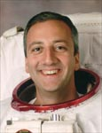

Lyndon B. Johnson Space Center
Houston, Texas 77058
|
National Aeronautics and Space Administration Lyndon B. Johnson Space Center Houston, Texas 77058 |
 |
Biographical Data |
||
Michael J. Massimino (Ph.D.)
NASA Astronaut (Former)
PERSONAL DATA: Born in New York in 1962. His hometown is Franklin Square, New York. Married. Two children. Mike enjoys baseball, family activities, camping, and coaching kids sports.
EDUCATION:
ORGANIZATIONS: MIT Alumni Association; Columbia University Alumni Association.
SPECIAL HONORS: American Astronautical Societys 2009 Flight Achievement Award; NASA Space Flight Medals; Order of Sons of Italy in America 2005 Guglielmo Marconi Award; Aviation Week & Space Technology 2002 Laurel Award; Sergei P. Korolev Diploma.
EXPERIENCE: Upon completing his B.S. degree from Columbia University, Mike worked for IBM as a systems engineer in New York City from 1984 until 1986. In 1986 he entered graduate school at the Massachusetts Institute of Technology where he conducted research on human operator control of space robotics systems in the MIT Mechanical Engineering Departments Human-Machine Systems Laboratory. His work resulted in the awarding of two patents. While a student at MIT he worked during the Summer of 1987 as a general engineer at NASA Headquarters in the Office of Aeronautics and Space Technology, during the summers of 1988 and 1989 as a research fellow in the Man-Systems Integration Branch at the NASA Marshall Space Flight Center, and during the summer of 1990 as a visiting research engineer at the German Aerospace Research Establishment (DLR) in Oberpfaffenhofen, Germany. After graduating from MIT in 1992, Mike worked at McDonnell Douglas Aerospace in Houston, Texas as a research engineer where he developed laptop computer displays to assist operators of the Space Shuttle remote manipulator system. These displays included the Manipulator Position Display, which was evaluated on STS-69. From 1992 to 1995 he was also an adjunct assistant professor in the Mechanical Engineering & Material Sciences Department at Rice University, where he taught feedback control of mechanical systems. In September 1995, Mike joined the faculty of the Georgia Institute of Technology as an assistant professor in the School of Industrial and Systems Engineering. At Georgia Tech he taught human-machine systems engineering classes and conducted research on human-machine interfaces for space and aircraft systems in the Center for Human-Machine Systems Research. He is currently an adjunct professor at Rice University and at Georgia Tech. He has published papers in technical journals and in the proceedings of technical conferences.
NASA EXPERIENCE: Selected as an astronaut candidate by NASA in May 1996, Mike reported to the Johnson Space Center in August 1996. He completed two years of initial training and evaluation and is qualified for flight assignment as a mission specialist. Prior to his first space flight assignment, Mike served in the Astronaut Office Robotics Branch, and in the Astronaut Office Extravehicular Activity (EVA or spacewalking) Branch. In 2002, following his first spaceflight, Mike served as a CAPCOM (spacecraft communicator) in Mission Control and as the Astronaut Office Technical Liaison to the Johnson Space Center EVA Program Office.
A veteran of two space flights, (STS-109 in March 2002 and STS-125 in May 2009) Massimino has logged a total of 571 hours and 47 minutes in space, and a cumulative total of 30 hours and 4 minutes of spacewalking in four spacewalks.
In addition to various technical tasks, Massimino also served as Chief of the Astronaut Appearances Office.
SPACE FLIGHT EXPERIENCE: STS-109 Columbia (March 1-12, 2002). STS-109 was the fourth Hubble Space Telescope servicing mission. The crew of STS-109 successfully upgraded the Hubble Space Telescope leaving it with a new power unit, a new camera (the Advanced Camera for Surveys), and new solar arrays. STS-109 set a record for spacewalk time with 35 hours and 55 minutes during 5 spacewalks. Massimino performed 2 spacewalks totaling 14 hours and 46 minutes. STS-109 orbited the Earth 165 times, and covered 4.5 million statute miles in over 262 hours and 10 minutes.
STS-125 Atlantis (May 11-24, 2009) was the fifth and final Hubble servicing mission. The 19 year old telescope spent six days in the Shuttles cargo bay undergoing an overhaul conducted by four spacewalkers over five daily spacewalks, with the assistance of crewmates inside the Atlantis. The space walkers overcame frozen bolts, stripped screws, and stuck handrails. STS-125 set a new record for spacewalking with 36 hours and 56 minutes during five spacewalks. Massimino performed 2 spacewalks totaling 15 hours and 58 minutes. The refurbished Hubble Telescope now has four new or rejuvenated scientific instruments, new batteries, new gyroscopes, and a new computer. The STS-125 mission traveled 5,276,000 miles in 197 Earth orbits and was accomplished in 309 hours, 37 minutes and 9 seconds.
JULY 2014